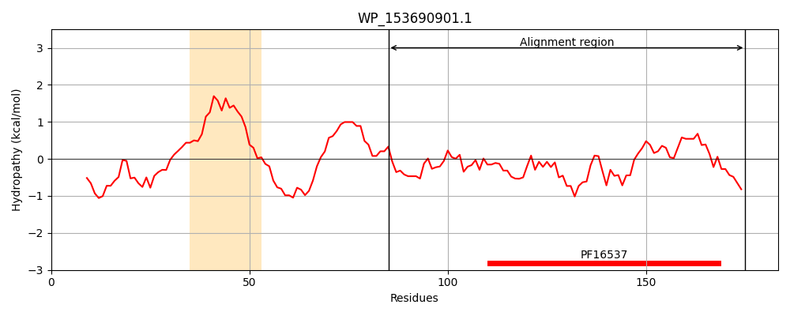
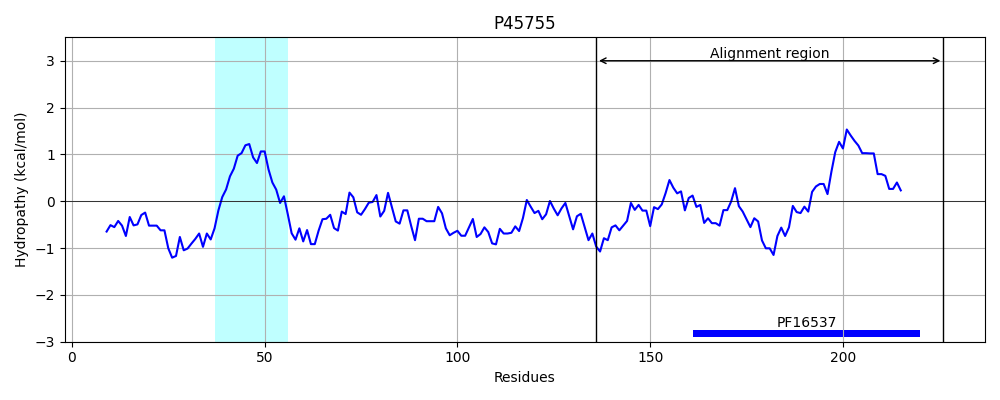
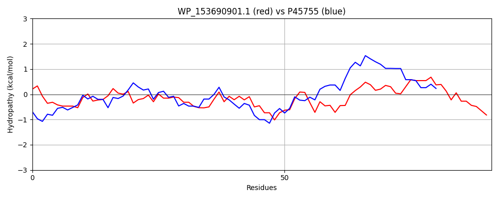

Hit Accession: P45755
Hit TCID: 9.B.42.1.1
Hit Description: gnl|BL_ORD_ID|10582 gnl|TC-DB|P45755|9.B.42.1.1 General secretion pathway protein B - Aeromonas hydrophila.
Mach Len: 91
e:0.000000
Query TMS Count : 1
Hit TMS Count: 1
TMS-Overlap Score: 0.000000
Predicted Substrates:CHEBI:8526;protein polypeptide chain
BLAST Alignment:
| Protein Hydropathy Plots: | |
|---|---|
|  |  |
Pairwise Alignment-Hydropathy Plot: | |
|  | |